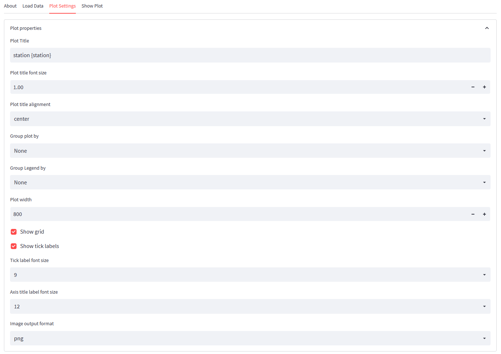

Plot Settings
This tab allows overwriting the automatically generated plot settings for the Piper diagram. The form is devided in the more general plot settings and the marker settings.

Plot Properties
In the plot properties sections, you may define the following parameters:
| Option | Description |
|---|---|
| Plot title | Title for the plot. If no title is needed, leave the fields empty. For grouped plots, you may include the group-by parameter in curly braces. For each plot, this expression will be replaced by the code for which the plot uses the data. |
| Plot title font size | Size of title font in em. |
| Plot title alignment | Define whether the title should be left-, center- or right-aligned |
| Group plots by | if your data contains strings or integer values with a limited number of distinct values, you may group the plots by such a field (e.g., station, geology, year, etc.). One plot will be created for each distinct value in the selected data column |
| Group Legend by | Define the field that would be used to have distinct markers. |
| Plot width | Width of plot in points |
| Show grid | Show or hide the grid lines. Grid lines can be hidden if the target diagram is small. |
| Show tick labels | Show or hide the tick labels. Tick labels may be hidden if the target diagram is small |
| Tick label font size | Select a larger font in points if the diagram needs to be scaled down. |
| Axis label font size | Select a larger font in points if the diagram needs to be scaled down. |
| Image output format | Select png for a bitmap format and SVG for a vectorized output. The SVG format is scaleable but is not as widely supported as the png format. |
Note that plot by and legend by grouping can be used in combination but different fields should be applied to each grouping. When using the same group field, each plot will contain only one marker.
Marker Properties
Fontus offers a wide range of symbols and colors to render the data on the plot:
| Option | Description |
|---|---|
| Marker size | |
| Marker color palette | |
| Marker generator algorithm | |
| Marker fill opacity | |
| Marker types |
Fontus plots are interactive; when hovering over markers, the corresponding data can be displayed in tooltips. In the tooltip section, you may narrow down which values would be displayed to prevent the tooltip from becoming overly overwhelming. Each field listed can be disabled. Note that the number of digits to be used in the tooltips is defined in the Load data section.